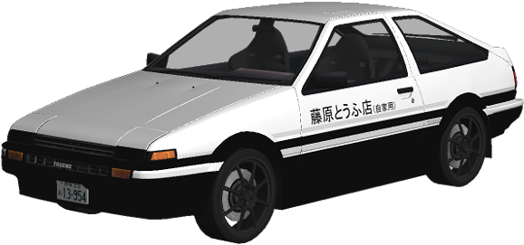

<nav class="navbar navbar-expand-lg navbar-light">
  <div class="container-fluid">

    <a class="navbar-brand" [routerLink]="['/home']" style="color:yellow;">
       
        Big Voiture
    </a>
    
    <button class="navbar-toggler" type="button" data-bs-toggle="collapse" data-bs-target="#navbarSupportedContent" aria-controls="navbarSupportedContent" aria-expanded="false" aria-label="Toggle navigation">
      <span class="navbar-toggler-icon"></span>
    </button>

    <div class="collapse navbar-collapse" id="navbarSupportedContent">
      <ul class="navbar-nav me-auto mb-2 mb-lg-0">
        <li class="nav-item">
          <a style="color:whitesmoke;" class="nav-link" aria-current="page" [routerLink]="['/home']">Home</a>
        </li>
      </ul>

      <div *ngIf="!authService.isAuth()">
        <button class="btn btn-primary" type="button" aria-current="page" [routerLink]="['/login']">Login</button>
      </div>

      <div *ngIf="authService.isAuth()">
        <button class="btn btn-success ms-2" type="button" aria-current="page" [routerLink]="['/profil']">Mon profil</button>
        <button class="btn btn-primary ms-2" type="button" aria-current="page" [routerLink]="['/louer']">Louer</button>
        <button class="btn btn-danger ms-2" type="button" aria-current="page" (click)="disconnect()">Disconnect</button>
      </div>

    </div>

  </div>
</nav>